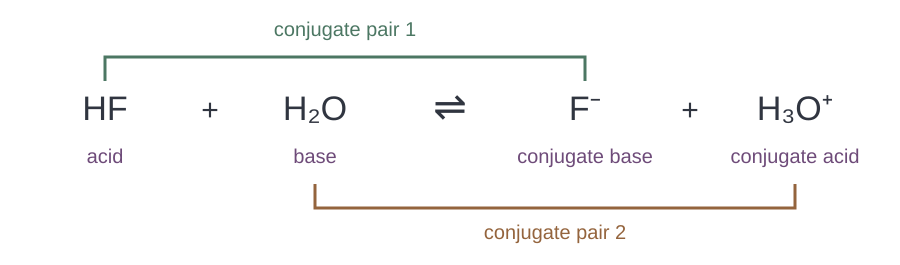
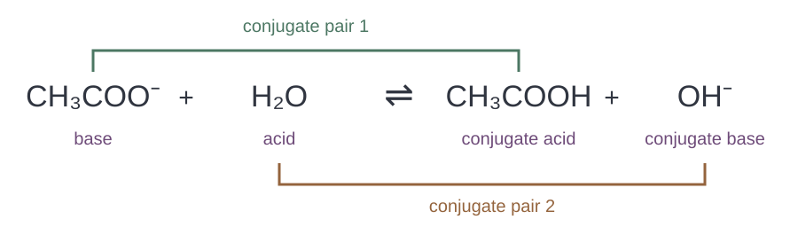
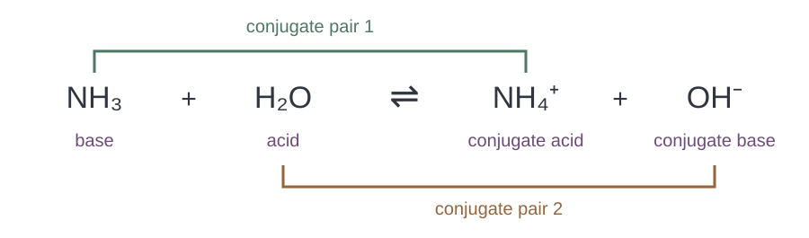
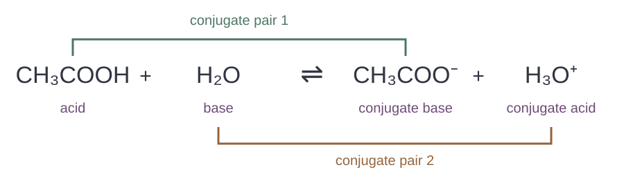
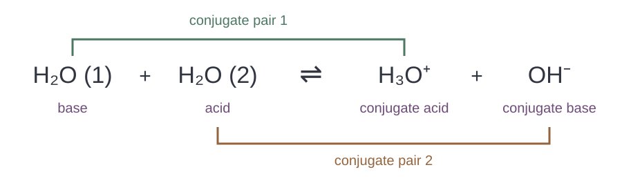

ติดตามการเปลี่ยนของ HF ในทิศไปข้างหน้า
HF [ ] หนึ่งตัว แล้วกลายเป็น [ ] อะตอม F จึง [ ]
คงเดิม
\(\ce{F-}\)
รับ H⁺
ให้ H⁺
\(\ce{F+}\)
ตรวจจำนวน H อะตอมอื่น และประจุ โดยติดตาม H⁺ ทีละหนึ่งตัว
HF ให้ H⁺ หนึ่งตัวเป็น F⁻ อะตอม F คงเดิม ประจุลดจาก 0 เป็น −1
HF donates one H⁺ to form F⁻. F is unchanged and charge falls from 0 to −1.
ติดตามน้ำในปฏิกิริยาของ HF
น้ำ [ ] จาก HF จึงเกิด [ ] ค่าประจุเปลี่ยนจาก 0 เป็น [ ]
\(\ce{H3O+}\)
+1
\(\ce{OH-}\)
−1
รับ H⁺
ให้ H⁺
ตรวจจำนวน H อะตอมอื่น และประจุ โดยติดตาม H⁺ ทีละหนึ่งตัว
น้ำรับ H⁺ หนึ่งตัว จึงเพิ่ม H หนึ่งและเพิ่มประจุหนึ่งหน่วย ได้ H₃O⁺
Accepting one H⁺ adds one H and raises the charge by one, giving H₃O⁺.
เมื่อกรด [ ] หนึ่งตัว สารที่เหลือเรียกว่า [ ] ของกรดนั้น และสามารถ [ ] กลับในปฏิกิริยาย้อนกลับ
รับ H⁺
คู่เบส
ให้ H⁺
รับอิเล็กตรอนหนึ่งตัว
คู่กรด
ตรวจจำนวน H อะตอมอื่น และประจุ โดยติดตาม H⁺ ทีละหนึ่งตัว
คู่เบสเกิดจากกรดเสีย H⁺ และรับ H⁺ กลับแล้วได้กรดเดิม การถ่ายโอนโปรตอนต่างจากการถ่ายโอนอิเล็กตรอน
A conjugate base is formed by loss of H⁺ and can accept H⁺ to regenerate the acid. Proton transfer differs from electron transfer.
เมื่อเบส [ ] หนึ่งตัว สารที่เกิดเรียกว่า [ ] ของเบสนั้น และสามารถ [ ] กลับได้
รับ H⁺
คู่กรด
รับ OH⁻ หนึ่งตัว
คู่เบส
ให้ H⁺
ตรวจจำนวน H อะตอมอื่น และประจุ โดยติดตาม H⁺ ทีละหนึ่งตัว
คู่กรดเกิดจากเบสรับ H⁺ ไม่ใช่เติม OH⁻ ให้สูตร
A conjugate acid forms when the base accepts H⁺, not by adding OH⁻.
เติมเกณฑ์ตรวจคู่จากสูตรและประจุ
แต่ละคู่ต่างกัน [ ] อะตอมอื่นต้อง [ ] และค่าประจุต่างกัน [ ] ดังนั้น F⁻ กับ NO₃⁻ ที่มีประจุเท่ากันจึง [ ]
หนึ่งหน่วย
H⁺ สองตัว
H⁺ หนึ่งตัว
ไม่เป็นคู่กัน
เป็นคู่กันทันที
เหมือนเดิม
ตรวจจำนวน H อะตอมอื่น และประจุ โดยติดตาม H⁺ ทีละหนึ่งตัว
ต้องตรวจทั้ง H อะตอมอื่น และประจุ F⁻ กับ NO₃⁻ มีองค์ประกอบต่างกัน ไม่ใช่คู่กรด–เบส
Check H, other atoms and charge. F⁻ and NO₃⁻ differ in composition, so they are not conjugates.
อ่านสมการเดิมในทิศย้อนกลับ
เมื่ออ่านจากขวาไปซ้าย H₃O⁺ [ ] จึงเป็น [ ] ส่วน F⁻ [ ] จึงเป็น [ ]
เบส
ให้ H⁺
ให้ OH⁻
รับอิเล็กตรอน
กรด
รับ H⁺
ตรวจจำนวน H อะตอมอื่น และประจุ โดยติดตาม H⁺ ทีละหนึ่งตัว
ย้อนกลับ: H₃O⁺ ให้ H⁺ แล้วเป็น H₂O และ F⁻ รับ H⁺ แล้วเป็น HF คู่เดิมยังคงเดิม
In reverse, H₃O⁺ donates H⁺ to become H₂O and F⁻ accepts H⁺ to become HF. The conjugate relationships stay the same.
เติมวิธีหาคู่เบสของ \(\ce{H2SO3}\)
\(\ce{H2SO3}\) [ ] หนึ่งตัว จึงได้คู่เบสคือ [ ]
รับ H⁺
ให้ H⁺
\(\ce{HSO3+}\)
\(\ce{SO3^2-}\)
\(\ce{HSO3-}\)
ตรวจจำนวน H อะตอมอื่น และประจุ โดยติดตาม H⁺ ทีละหนึ่งตัว
\(\ce{H2SO3}\) ให้ H⁺ หนึ่งตัว แล้วได้ \(\ce{HSO3-}\) ต้องเปลี่ยนทั้งจำนวน H และค่าประจุหนึ่งหน่วย โดยอะตอมอื่นคงเดิม
\(\ce{H2SO3}\) donates H⁺ once to give \(\ce{HSO3-}\). Both the H count and charge change by one; all other atoms stay unchanged.
เติมวิธีหาคู่เบสของ \(\ce{HC2O4-}\)
\(\ce{HC2O4-}\) [ ] หนึ่งตัว จึงได้คู่เบสคือ [ ]
\(\ce{C2O4-}\)
ให้ H⁺
\(\ce{C2O4^2-}\)
รับ H⁺
\(\ce{H2C2O4}\)
ตรวจจำนวน H อะตอมอื่น และประจุ โดยติดตาม H⁺ ทีละหนึ่งตัว
\(\ce{HC2O4-}\) ให้ H⁺ หนึ่งตัว แล้วได้ \(\ce{C2O4^2-}\) ต้องเปลี่ยนทั้งจำนวน H และค่าประจุหนึ่งหน่วย โดยอะตอมอื่นคงเดิม
\(\ce{HC2O4-}\) donates H⁺ once to give \(\ce{C2O4^2-}\). Both the H count and charge change by one; all other atoms stay unchanged.
เติมวิธีหาคู่เบสของ \(\ce{NH4+}\)
\(\ce{NH4+}\) [ ] หนึ่งตัว จึงได้คู่เบสคือ [ ]
\(\ce{NH2-}\)
\(\ce{NH3}\)
รับ H⁺
ให้ H⁺
\(\ce{NH3+}\)
ตรวจจำนวน H อะตอมอื่น และประจุ โดยติดตาม H⁺ ทีละหนึ่งตัว
\(\ce{NH4+}\) ให้ H⁺ หนึ่งตัว แล้วได้ \(\ce{NH3}\) ต้องเปลี่ยนทั้งจำนวน H และค่าประจุหนึ่งหน่วย โดยอะตอมอื่นคงเดิม
\(\ce{NH4+}\) donates H⁺ once to give \(\ce{NH3}\). Both the H count and charge change by one; all other atoms stay unchanged.
เติมวิธีหาคู่เบสของ \(\ce{H2O}\)
\(\ce{H2O}\) [ ] หนึ่งตัว จึงได้คู่เบสคือ [ ]
\(\ce{H3O+}\)
รับ H⁺
\(\ce{OH-}\)
\(\ce{OH+}\)
ให้ H⁺
ตรวจจำนวน H อะตอมอื่น และประจุ โดยติดตาม H⁺ ทีละหนึ่งตัว
\(\ce{H2O}\) ให้ H⁺ หนึ่งตัว แล้วได้ \(\ce{OH-}\) ต้องเปลี่ยนทั้งจำนวน H และค่าประจุหนึ่งหน่วย โดยอะตอมอื่นคงเดิม
\(\ce{H2O}\) donates H⁺ once to give \(\ce{OH-}\). Both the H count and charge change by one; all other atoms stay unchanged.
เติมวิธีหาคู่กรดของ \(\ce{SO3^2-}\)
\(\ce{SO3^2-}\) [ ] หนึ่งตัว จึงได้คู่กรดคือ [ ]
\(\ce{HSO3-}\)
รับ H⁺
\(\ce{HSO3^2-}\)
\(\ce{H2SO3}\)
ให้ H⁺
ตรวจจำนวน H อะตอมอื่น และประจุ โดยติดตาม H⁺ ทีละหนึ่งตัว
\(\ce{SO3^2-}\) รับ H⁺ หนึ่งตัว แล้วได้ \(\ce{HSO3-}\) ต้องเปลี่ยนทั้งจำนวน H และค่าประจุหนึ่งหน่วย โดยอะตอมอื่นคงเดิม
\(\ce{SO3^2-}\) accepts H⁺ once to give \(\ce{HSO3-}\). Both the H count and charge change by one; all other atoms stay unchanged.
เติมวิธีหาคู่กรดของ \(\ce{NH3}\)
\(\ce{NH3}\) [ ] หนึ่งตัว จึงได้คู่กรดคือ [ ]
รับ H⁺
ให้ H⁺
\(\ce{NH4+}\)
\(\ce{NH2-}\)
\(\ce{NH4-}\)
ตรวจจำนวน H อะตอมอื่น และประจุ โดยติดตาม H⁺ ทีละหนึ่งตัว
\(\ce{NH3}\) รับ H⁺ หนึ่งตัว แล้วได้ \(\ce{NH4+}\) ต้องเปลี่ยนทั้งจำนวน H และค่าประจุหนึ่งหน่วย โดยอะตอมอื่นคงเดิม
\(\ce{NH3}\) accepts H⁺ once to give \(\ce{NH4+}\). Both the H count and charge change by one; all other atoms stay unchanged.
เติมวิธีหาคู่กรดของ \(\ce{H2O}\)
\(\ce{H2O}\) [ ] หนึ่งตัว จึงได้คู่กรดคือ [ ]
รับ H⁺
\(\ce{H3O-}\)
ให้ H⁺
\(\ce{H3O+}\)
\(\ce{OH-}\)
ตรวจจำนวน H อะตอมอื่น และประจุ โดยติดตาม H⁺ ทีละหนึ่งตัว
\(\ce{H2O}\) รับ H⁺ หนึ่งตัว แล้วได้ \(\ce{H3O+}\) ต้องเปลี่ยนทั้งจำนวน H และค่าประจุหนึ่งหน่วย โดยอะตอมอื่นคงเดิม
\(\ce{H2O}\) accepts H⁺ once to give \(\ce{H3O+}\). Both the H count and charge change by one; all other atoms stay unchanged.
เติมวิธีหาคู่กรดของ \(\ce{CN-}\)
\(\ce{CN-}\) [ ] หนึ่งตัว จึงได้คู่กรดคือ [ ]
\(\ce{HCN-}\)
\(\ce{HCN}\)
\(\ce{CN}\)
รับ H⁺
ให้ H⁺
ตรวจจำนวน H อะตอมอื่น และประจุ โดยติดตาม H⁺ ทีละหนึ่งตัว
\(\ce{CN-}\) รับ H⁺ หนึ่งตัว แล้วได้ \(\ce{HCN}\) ต้องเปลี่ยนทั้งจำนวน H และค่าประจุหนึ่งหน่วย โดยอะตอมอื่นคงเดิม
\(\ce{CN-}\) accepts H⁺ once to give \(\ce{HCN}\). Both the H count and charge change by one; all other atoms stay unchanged.
คู่ใดไม่ใช่คู่กรด–เบสโดยตรง?
\(\ce{NH4+}\) / \(\ce{NH3}\)
\(\ce{H2SO4}\) / \(\ce{SO4^2-}\)
\(\ce{H3O+}\) / \(\ce{H2O}\)
\(\ce{HNO2}\) / \(\ce{NO2-}\)
ติดตาม H⁺ และตรวจเงื่อนไขของคู่กรด–เบสก่อนตัดสิน
H₂SO₄ / SO₄²⁻ ต่างกันสอง H⁺ จึงไม่เป็นคู่โดยตรง ต้องผ่าน HSO₄⁻ ส่วนอีกสามคู่ต่างกันหนึ่ง H⁺
H₂SO₄ / SO₄²⁻ differ by two H⁺, so HSO₄⁻ lies between them. Each other option differs by one H⁺.
นักเรียนเอา H⁺ ออกจาก NH₄⁺ แล้วเขียน NH₃⁺ ข้อใดแก้ได้ถูกต้อง?
NH₂⁻ ถูกต้อง เพราะต้องตัด H สองตัว
NH₃ ถูกต้อง เพราะลดทั้ง H หนึ่งตัวและประจุหนึ่งหน่วย
NH₄⁻ ถูกต้อง เพราะเปลี่ยนแต่เครื่องหมายประจุ
NH₃⁺ ถูกแล้ว เพราะลดเฉพาะจำนวน H
ติดตาม H⁺ และตรวจเงื่อนไขของคู่กรด–เบสก่อนตัดสิน
NH₄⁺ → NH₃ + H⁺: อะตอมและประจุดุลกัน +1 = 0 + (+1) คู่คือ NH₄⁺ / NH₃
NH₄⁺ → NH₃ + H⁺ conserves atoms and charge: +1 = 0 + (+1). The pair is NH₄⁺ / NH₃.
อ่านสมการแล้วเติมผู้ให้–ผู้รับและคู่ทั้งสอง
ในทิศไปข้างหน้า กรดคือ [ ] และเบสคือ [ ] คู่ของกรดข้างต้น (กรด / คู่เบส) คือ [ ] ส่วนคู่ของเบสข้างต้น (คู่กรด / เบส) คือ [ ]
\(\ce{H3O+}\) / \(\ce{H2O}\)
\(\ce{H3O+}\) / \(\ce{F-}\)
\(\ce{HF}\)
\(\ce{HF}\) / \(\ce{H2O}\)
\(\ce{HF}\) / \(\ce{F-}\)
\(\ce{H2O}\)
ตรวจจำนวน H อะตอมอื่น และประจุ โดยติดตาม H⁺ ทีละหนึ่งตัว
พิจารณาทิศไปข้างหน้า: \(\ce{HF}\) ให้ H⁺ กลายเป็น \(\ce{F-}\) ส่วน \(\ce{H2O}\) รับ H⁺ กลายเป็น \(\ce{H3O+}\) จึงได้คู่ \(\ce{HF}\) / \(\ce{F-}\) และ \(\ce{H3O+}\) / \(\ce{H2O}\) แต่ละคู่ต่างกันหนึ่ง H⁺

คู่กรด–เบสของ HF กับน้ำ Forward: \(\ce{HF}\) donates H⁺ to become \(\ce{F-}\); \(\ce{H2O}\) accepts H⁺ to become \(\ce{H3O+}\). The pairs are \(\ce{HF}\) / \(\ce{F-}\) and \(\ce{H3O+}\) / \(\ce{H2O}\), each differing by one H⁺.
Conjugate pairs for HF and water.
อ่านสมการแล้วเติมผู้ให้–ผู้รับและคู่ทั้งสอง
ในทิศไปข้างหน้า กรดคือ [ ] และเบสคือ [ ] คู่ของกรดข้างต้น (กรด / คู่เบส) คือ [ ] ส่วนคู่ของเบสข้างต้น (คู่กรด / เบส) คือ [ ]
\(\ce{H2O}\) / \(\ce{OH-}\)
\(\ce{H2O}\)
\(\ce{CH3COOH}\) / \(\ce{OH-}\)
\(\ce{H2O}\) / \(\ce{CH3COO-}\)
\(\ce{CH3COO-}\)
\(\ce{CH3COOH}\) / \(\ce{CH3COO-}\)
ตรวจจำนวน H อะตอมอื่น และประจุ โดยติดตาม H⁺ ทีละหนึ่งตัว
พิจารณาทิศไปข้างหน้า: \(\ce{H2O}\) ให้ H⁺ กลายเป็น \(\ce{OH-}\) ส่วน \(\ce{CH3COO-}\) รับ H⁺ กลายเป็น \(\ce{CH3COOH}\) จึงได้คู่ \(\ce{H2O}\) / \(\ce{OH-}\) และ \(\ce{CH3COOH}\) / \(\ce{CH3COO-}\) แต่ละคู่ต่างกันหนึ่ง H⁺

คู่กรด–เบสของแอซีเตตกับน้ำ Forward: \(\ce{H2O}\) donates H⁺ to become \(\ce{OH-}\); \(\ce{CH3COO-}\) accepts H⁺ to become \(\ce{CH3COOH}\). The pairs are \(\ce{H2O}\) / \(\ce{OH-}\) and \(\ce{CH3COOH}\) / \(\ce{CH3COO-}\), each differing by one H⁺.
Conjugate pairs for acetate and water.
อ่านสมการแล้วเติมผู้ให้–ผู้รับและคู่ทั้งสอง
ในทิศไปข้างหน้า กรดคือ [ ] และเบสคือ [ ] คู่ของกรดข้างต้น (กรด / คู่เบส) คือ [ ] ส่วนคู่ของเบสข้างต้น (คู่กรด / เบส) คือ [ ]
\(\ce{H2O}\) / \(\ce{OH-}\)
\(\ce{H2O}\) / \(\ce{NH3}\)
\(\ce{NH3}\)
\(\ce{NH4+}\) / \(\ce{OH-}\)
\(\ce{H2O}\)
\(\ce{NH4+}\) / \(\ce{NH3}\)
ตรวจจำนวน H อะตอมอื่น และประจุ โดยติดตาม H⁺ ทีละหนึ่งตัว
พิจารณาทิศไปข้างหน้า: \(\ce{H2O}\) ให้ H⁺ กลายเป็น \(\ce{OH-}\) ส่วน \(\ce{NH3}\) รับ H⁺ กลายเป็น \(\ce{NH4+}\) จึงได้คู่ \(\ce{H2O}\) / \(\ce{OH-}\) และ \(\ce{NH4+}\) / \(\ce{NH3}\) แต่ละคู่ต่างกันหนึ่ง H⁺
Forward: \(\ce{H2O}\) donates H⁺ to become \(\ce{OH-}\); \(\ce{NH3}\) accepts H⁺ to become \(\ce{NH4+}\). The pairs are \(\ce{H2O}\) / \(\ce{OH-}\) and \(\ce{NH4+}\) / \(\ce{NH3}\), each differing by one H⁺.
อ่านสมการแล้วเติมผู้ให้–ผู้รับและคู่ทั้งสอง
ในทิศไปข้างหน้า กรดคือ [ ] และเบสคือ [ ] คู่ของกรดข้างต้น (กรด / คู่เบส) คือ [ ] ส่วนคู่ของเบสข้างต้น (คู่กรด / เบส) คือ [ ]
\(\ce{HNO3}\)
\(\ce{H3O+}\) / \(\ce{H2O}\)
\(\ce{HNO3}\) / \(\ce{NO3-}\)
\(\ce{H2O}\)
\(\ce{H3O+}\) / \(\ce{NO3-}\)
\(\ce{HNO3}\) / \(\ce{H2O}\)
ตรวจจำนวน H อะตอมอื่น และประจุ โดยติดตาม H⁺ ทีละหนึ่งตัว
พิจารณาทิศไปข้างหน้า: \(\ce{HNO3}\) ให้ H⁺ กลายเป็น \(\ce{NO3-}\) ส่วน \(\ce{H2O}\) รับ H⁺ กลายเป็น \(\ce{H3O+}\) จึงได้คู่ \(\ce{HNO3}\) / \(\ce{NO3-}\) และ \(\ce{H3O+}\) / \(\ce{H2O}\) แต่ละคู่ต่างกันหนึ่ง H⁺
Forward: \(\ce{HNO3}\) donates H⁺ to become \(\ce{NO3-}\); \(\ce{H2O}\) accepts H⁺ to become \(\ce{H3O+}\). The pairs are \(\ce{HNO3}\) / \(\ce{NO3-}\) and \(\ce{H3O+}\) / \(\ce{H2O}\), each differing by one H⁺.
อ่านสมการแล้วเติมผู้ให้–ผู้รับและคู่ทั้งสอง
ในทิศไปข้างหน้า กรดคือ [ ] และเบสคือ [ ] คู่ของกรดข้างต้น (กรด / คู่เบส) คือ [ ] ส่วนคู่ของเบสข้างต้น (คู่กรด / เบส) คือ [ ]
\(\ce{H2O}\) / \(\ce{OH-}\)
\(\ce{NH3}\) / \(\ce{OH-}\)
\(\ce{H2O}\) / \(\ce{NH2-}\)
\(\ce{H2O}\)
\(\ce{NH3}\) / \(\ce{NH2-}\)
\(\ce{NH2-}\)
ตรวจจำนวน H อะตอมอื่น และประจุ โดยติดตาม H⁺ ทีละหนึ่งตัว
พิจารณาทิศไปข้างหน้า: \(\ce{H2O}\) ให้ H⁺ กลายเป็น \(\ce{OH-}\) ส่วน \(\ce{NH2-}\) รับ H⁺ กลายเป็น \(\ce{NH3}\) จึงได้คู่ \(\ce{H2O}\) / \(\ce{OH-}\) และ \(\ce{NH3}\) / \(\ce{NH2-}\) แต่ละคู่ต่างกันหนึ่ง H⁺
Forward: \(\ce{H2O}\) donates H⁺ to become \(\ce{OH-}\); \(\ce{NH2-}\) accepts H⁺ to become \(\ce{NH3}\). The pairs are \(\ce{H2O}\) / \(\ce{OH-}\) and \(\ce{NH3}\) / \(\ce{NH2-}\), each differing by one H⁺.
อ่านสมการแล้วเติมผู้ให้–ผู้รับและคู่ทั้งสอง
ในทิศไปข้างหน้า กรดคือ [ ] และเบสคือ [ ] คู่ของกรดข้างต้น (กรด / คู่เบส) คือ [ ] ส่วนคู่ของเบสข้างต้น (คู่กรด / เบส) คือ [ ]
\(\ce{HCOOH}\)
\(\ce{H2O}\)
\(\ce{HCOOH}\) / \(\ce{H2O}\)
\(\ce{HCOOH}\) / \(\ce{HCOO-}\)
\(\ce{H3O+}\) / \(\ce{HCOO-}\)
\(\ce{H3O+}\) / \(\ce{H2O}\)
ตรวจจำนวน H อะตอมอื่น และประจุ โดยติดตาม H⁺ ทีละหนึ่งตัว
พิจารณาทิศไปข้างหน้า: \(\ce{HCOOH}\) ให้ H⁺ กลายเป็น \(\ce{HCOO-}\) ส่วน \(\ce{H2O}\) รับ H⁺ กลายเป็น \(\ce{H3O+}\) จึงได้คู่ \(\ce{HCOOH}\) / \(\ce{HCOO-}\) และ \(\ce{H3O+}\) / \(\ce{H2O}\) แต่ละคู่ต่างกันหนึ่ง H⁺
Forward: \(\ce{HCOOH}\) donates H⁺ to become \(\ce{HCOO-}\); \(\ce{H2O}\) accepts H⁺ to become \(\ce{H3O+}\). The pairs are \(\ce{HCOOH}\) / \(\ce{HCOO-}\) and \(\ce{H3O+}\) / \(\ce{H2O}\), each differing by one H⁺.
อ่านสมการแล้วเติมผู้ให้–ผู้รับและคู่ทั้งสอง
ในทิศไปข้างหน้า กรดคือ [ ] และเบสคือ [ ] คู่ของกรดข้างต้น (กรด / คู่เบส) คือ [ ] ส่วนคู่ของเบสข้างต้น (คู่กรด / เบส) คือ [ ]
\(\ce{H2O}\) / \(\ce{OH-}\)
\(\ce{CH3NH3+}\) / \(\ce{CH3NH2}\)
\(\ce{H2O}\) / \(\ce{CH3NH2}\)
\(\ce{H2O}\)
\(\ce{CH3NH3+}\) / \(\ce{OH-}\)
\(\ce{CH3NH2}\)
ตรวจจำนวน H อะตอมอื่น และประจุ โดยติดตาม H⁺ ทีละหนึ่งตัว
พิจารณาทิศไปข้างหน้า: \(\ce{H2O}\) ให้ H⁺ กลายเป็น \(\ce{OH-}\) ส่วน \(\ce{CH3NH2}\) รับ H⁺ กลายเป็น \(\ce{CH3NH3+}\) จึงได้คู่ \(\ce{H2O}\) / \(\ce{OH-}\) และ \(\ce{CH3NH3+}\) / \(\ce{CH3NH2}\) แต่ละคู่ต่างกันหนึ่ง H⁺
Forward: \(\ce{H2O}\) donates H⁺ to become \(\ce{OH-}\); \(\ce{CH3NH2}\) accepts H⁺ to become \(\ce{CH3NH3+}\). The pairs are \(\ce{H2O}\) / \(\ce{OH-}\) and \(\ce{CH3NH3+}\) / \(\ce{CH3NH2}\), each differing by one H⁺.
เติมผลิตภัณฑ์และคู่กรด–เบสจากการให้–รับ H⁺
สารที่เกิดจาก \(\ce{NH3}\) คือ [ ] และจาก \(\ce{H2O}\) คือ [ ] คู่กรด / คู่เบสทั้งสองคือ [ ] และ [ ]
\(\ce{NH4+}\)
\(\ce{NH4+}\) / \(\ce{NH3}\)
\(\ce{NH2-}\)
\(\ce{H3O+}\)
\(\ce{OH-}\)
\(\ce{H2O}\) / \(\ce{OH-}\)
ตรวจจำนวน H อะตอมอื่น และประจุ โดยติดตาม H⁺ ทีละหนึ่งตัว
\(\ce{NH3(aq) + H2O(l) <=> NH4+(aq) + OH-(aq)}\) โดย \(\ce{H2O}\) ให้ H⁺ ส่วน \(\ce{NH3}\) รับ H⁺ คู่คือ \(\ce{H2O}\) / \(\ce{OH-}\) และ \(\ce{NH4+}\) / \(\ce{NH3}\)

คู่กรด–เบสของแอมโมเนียกับน้ำ \(\ce{NH3(aq) + H2O(l) <=> NH4+(aq) + OH-(aq)}\). \(\ce{H2O}\) donates H⁺ and \(\ce{NH3}\) accepts it. The pairs are \(\ce{H2O}\) / \(\ce{OH-}\) and \(\ce{NH4+}\) / \(\ce{NH3}\).
Conjugate pairs for ammonia and water.
เติมผลิตภัณฑ์และคู่กรด–เบสจากการให้–รับ H⁺
สารที่เกิดจาก \(\ce{CH3COOH}\) คือ [ ] และจาก \(\ce{H2O}\) คือ [ ] คู่กรด / คู่เบสทั้งสองคือ [ ] และ [ ]
\(\ce{CH3COOH}\) / \(\ce{CH3COO-}\)
\(\ce{OH-}\)
\(\ce{NH2-}\)
\(\ce{H3O+}\) / \(\ce{H2O}\)
\(\ce{H3O+}\)
\(\ce{CH3COO-}\)
ตรวจจำนวน H อะตอมอื่น และประจุ โดยติดตาม H⁺ ทีละหนึ่งตัว
\(\ce{CH3COOH(aq) + H2O(l) <=> CH3COO-(aq) + H3O+(aq)}\) โดย \(\ce{CH3COOH}\) ให้ H⁺ ส่วน \(\ce{H2O}\) รับ H⁺ คู่คือ \(\ce{CH3COOH}\) / \(\ce{CH3COO-}\) และ \(\ce{H3O+}\) / \(\ce{H2O}\)

คู่กรด–เบสของกรดแอซีติกกับน้ำ \(\ce{CH3COOH(aq) + H2O(l) <=> CH3COO-(aq) + H3O+(aq)}\). \(\ce{CH3COOH}\) donates H⁺ and \(\ce{H2O}\) accepts it. The pairs are \(\ce{CH3COOH}\) / \(\ce{CH3COO-}\) and \(\ce{H3O+}\) / \(\ce{H2O}\).
Conjugate pairs for acetic acid and water.
ในสองสมการนี้ น้ำทำหน้าที่ต่างกันอย่างไรในทิศไปข้างหน้า?
กับ HF น้ำเป็นเบส; กับ CH₃COO⁻ น้ำเป็นกรด
น้ำเป็นกรดในทั้งสองสมการ
น้ำไม่มีบทบาทเพราะเป็นตัวทำละลาย
น้ำเป็นเบสในทั้งสองสมการ
ติดตาม H⁺ และตรวจเงื่อนไขของคู่กรด–เบสก่อนตัดสิน
กับ HF น้ำรับ H⁺ เป็น H₃O⁺ จึงเป็นเบส กับ CH₃COO⁻ น้ำให้ H⁺ เป็น OH⁻ จึงเป็นกรด
With HF water accepts H⁺ to form H₃O⁺; with CH₃COO⁻ it donates H⁺ to form OH⁻.
สมการนี้เขียนสลับตำแหน่ง ข้อใดระบุคู่ทั้งสองถูกต้อง?
HNO₂ / NO₂⁻ และ H₃O⁺ / H₂O
H₂O / HNO₂ และ NO₂⁻ / H₃O⁺
สารตั้งต้นที่ทำปฏิกิริยากันต้องเป็นคู่กันเสมอ
H₂O / NO₂⁻ และ HNO₂ / H₃O⁺
ติดตาม H⁺ และตรวจเงื่อนไขของคู่กรด–เบสก่อนตัดสิน
คู่คือ HNO₂ / NO₂⁻ และ H₃O⁺ / H₂O ต่างกันหนึ่ง H⁺ ภายในแต่ละคู่ การสลับตำแหน่งเขียนสมการไม่เปลี่ยนคู่ และสารตั้งต้นทั้งสองไม่จำเป็นเป็นคู่กัน
The pairs are HNO₂ / NO₂⁻ and H₃O⁺ / H₂O, each differing by one H⁺. Changing written positions does not change the relationships; the reactants need not be conjugates.
ในทิศไปข้างหน้า น้ำที่เกิดขึ้นเป็นคู่กรดของสารใด?
\(\ce{OH-}\)
ทั้ง CH₃COOH และ CH₃COO⁻
\(\ce{CH3COO-}\)
\(\ce{CH3COOH}\)
ติดตาม H⁺ และตรวจเงื่อนไขของคู่กรด–เบสก่อนตัดสิน
OH⁻ รับ H⁺ เป็น H₂O คู่คือ H₂O / OH⁻ ส่วนกรดแอซีติกให้ H⁺ เป็น CH₃COO⁻
OH⁻ accepts H⁺ to form H₂O. Its pair is H₂O / OH⁻; acetic acid donates H⁺ to form CH₃COO⁻.
ข้อใดจัด CH₃COOH และ H₃PO₄ ตามจำนวนโปรตอนที่ให้ได้ถูกต้อง?
ทั้งคู่เป็นพอลิโพรติก เพราะมี H ในสูตรมากกว่าหนึ่งตัว
ทั้งคู่เป็นมอโนโพรติก เพราะแต่ละขั้นให้ H⁺ หนึ่งตัว
CH₃COOH เป็นพอลิโพรติกเพราะมี H สี่ตัว; H₃PO₄ เป็นมอโนโพรติก
CH₃COOH เป็นมอโนโพรติก ให้ H⁺ จาก COOH หนึ่งตัว; H₃PO₄ เป็นพอลิโพรติก ให้ H⁺ ได้สามขั้น
ติดตาม H⁺ และตรวจเงื่อนไขของคู่กรด–เบสก่อนตัดสิน
จำนวนโปรตอนที่กรดให้ได้ในกระบวนการที่เรียนไม่เท่ากับจำนวน H ทั้งหมดในสูตร CH₃COOH ให้ H⁺ จากหมู่ COOH หนึ่งตัว ส่วน H₃PO₄ ให้ได้สามตัวทีละขั้น จึงเป็นพอลิโพรติก
The number of acidic protons is not the total H count. CH₃COOH supplies one H⁺ from COOH; H₃PO₄ can donate three in separate steps and is polyprotic.
อ่านสมการแล้วเติมผู้ให้–ผู้รับและคู่ทั้งสอง
ในทิศไปข้างหน้า กรดคือ [ ] และเบสคือ [ ] คู่ของกรดข้างต้น (กรด / คู่เบส) คือ [ ] ส่วนคู่ของเบสข้างต้น (คู่กรด / เบส) คือ [ ]
\(\ce{H3PO4}\) / \(\ce{H2PO4-}\)
\(\ce{H3O+}\) / \(\ce{H2PO4-}\)
\(\ce{H2O}\)
\(\ce{H3PO4}\)
\(\ce{H3PO4}\) / \(\ce{H2O}\)
\(\ce{H3O+}\) / \(\ce{H2O}\)
ตรวจจำนวน H อะตอมอื่น และประจุ โดยติดตาม H⁺ ทีละหนึ่งตัว
พิจารณาทิศไปข้างหน้า: \(\ce{H3PO4}\) ให้ H⁺ กลายเป็น \(\ce{H2PO4-}\) ส่วน \(\ce{H2O}\) รับ H⁺ กลายเป็น \(\ce{H3O+}\) จึงได้คู่ \(\ce{H3PO4}\) / \(\ce{H2PO4-}\) และ \(\ce{H3O+}\) / \(\ce{H2O}\) แต่ละคู่ต่างกันหนึ่ง H⁺
Forward: \(\ce{H3PO4}\) donates H⁺ to become \(\ce{H2PO4-}\); \(\ce{H2O}\) accepts H⁺ to become \(\ce{H3O+}\). The pairs are \(\ce{H3PO4}\) / \(\ce{H2PO4-}\) and \(\ce{H3O+}\) / \(\ce{H2O}\), each differing by one H⁺.
อ่านสมการแล้วเติมผู้ให้–ผู้รับและคู่ทั้งสอง
ในทิศไปข้างหน้า กรดคือ [ ] และเบสคือ [ ] คู่ของกรดข้างต้น (กรด / คู่เบส) คือ [ ] ส่วนคู่ของเบสข้างต้น (คู่กรด / เบส) คือ [ ]
\(\ce{H3O+}\) / \(\ce{H2O}\)
\(\ce{H3O+}\) / \(\ce{HPO4^2-}\)
\(\ce{H2PO4-}\) / \(\ce{H2O}\)
\(\ce{H2PO4-}\) / \(\ce{HPO4^2-}\)
\(\ce{H2O}\)
\(\ce{H2PO4-}\)
ตรวจจำนวน H อะตอมอื่น และประจุ โดยติดตาม H⁺ ทีละหนึ่งตัว
พิจารณาทิศไปข้างหน้า: \(\ce{H2PO4-}\) ให้ H⁺ กลายเป็น \(\ce{HPO4^2-}\) ส่วน \(\ce{H2O}\) รับ H⁺ กลายเป็น \(\ce{H3O+}\) จึงได้คู่ \(\ce{H2PO4-}\) / \(\ce{HPO4^2-}\) และ \(\ce{H3O+}\) / \(\ce{H2O}\) แต่ละคู่ต่างกันหนึ่ง H⁺
Forward: \(\ce{H2PO4-}\) donates H⁺ to become \(\ce{HPO4^2-}\); \(\ce{H2O}\) accepts H⁺ to become \(\ce{H3O+}\). The pairs are \(\ce{H2PO4-}\) / \(\ce{HPO4^2-}\) and \(\ce{H3O+}\) / \(\ce{H2O}\), each differing by one H⁺.
อ่านสมการแล้วเติมผู้ให้–ผู้รับและคู่ทั้งสอง
ในทิศไปข้างหน้า กรดคือ [ ] และเบสคือ [ ] คู่ของกรดข้างต้น (กรด / คู่เบส) คือ [ ] ส่วนคู่ของเบสข้างต้น (คู่กรด / เบส) คือ [ ]
\(\ce{H3O+}\) / \(\ce{PO4^3-}\)
\(\ce{H3O+}\) / \(\ce{H2O}\)
\(\ce{H2O}\)
\(\ce{HPO4^2-}\)
\(\ce{HPO4^2-}\) / \(\ce{PO4^3-}\)
\(\ce{HPO4^2-}\) / \(\ce{H2O}\)
ตรวจจำนวน H อะตอมอื่น และประจุ โดยติดตาม H⁺ ทีละหนึ่งตัว
พิจารณาทิศไปข้างหน้า: \(\ce{HPO4^2-}\) ให้ H⁺ กลายเป็น \(\ce{PO4^3-}\) ส่วน \(\ce{H2O}\) รับ H⁺ กลายเป็น \(\ce{H3O+}\) จึงได้คู่ \(\ce{HPO4^2-}\) / \(\ce{PO4^3-}\) และ \(\ce{H3O+}\) / \(\ce{H2O}\) แต่ละคู่ต่างกันหนึ่ง H⁺
Forward: \(\ce{HPO4^2-}\) donates H⁺ to become \(\ce{PO4^3-}\); \(\ce{H2O}\) accepts H⁺ to become \(\ce{H3O+}\). The pairs are \(\ce{HPO4^2-}\) / \(\ce{PO4^3-}\) and \(\ce{H3O+}\) / \(\ce{H2O}\), each differing by one H⁺.
อ่านสมการแล้วเติมผู้ให้–ผู้รับและคู่ทั้งสอง
ในทิศไปข้างหน้า กรดคือ [ ] และเบสคือ [ ] คู่ของกรดข้างต้น (กรด / คู่เบส) คือ [ ] ส่วนคู่ของเบสข้างต้น (คู่กรด / เบส) คือ [ ]
\(\ce{HS-}\) / \(\ce{OH-}\)
\(\ce{H2O}\)
\(\ce{H2O}\) / \(\ce{S^2-}\)
\(\ce{S^2-}\)
\(\ce{HS-}\) / \(\ce{S^2-}\)
\(\ce{H2O}\) / \(\ce{OH-}\)
ตรวจจำนวน H อะตอมอื่น และประจุ โดยติดตาม H⁺ ทีละหนึ่งตัว
พิจารณาทิศไปข้างหน้า: \(\ce{H2O}\) ให้ H⁺ กลายเป็น \(\ce{OH-}\) ส่วน \(\ce{S^2-}\) รับ H⁺ กลายเป็น \(\ce{HS-}\) จึงได้คู่ \(\ce{H2O}\) / \(\ce{OH-}\) และ \(\ce{HS-}\) / \(\ce{S^2-}\) แต่ละคู่ต่างกันหนึ่ง H⁺
Forward: \(\ce{H2O}\) donates H⁺ to become \(\ce{OH-}\); \(\ce{S^2-}\) accepts H⁺ to become \(\ce{HS-}\). The pairs are \(\ce{H2O}\) / \(\ce{OH-}\) and \(\ce{HS-}\) / \(\ce{S^2-}\), each differing by one H⁺.
อ่านสมการแล้วเติมผู้ให้–ผู้รับและคู่ทั้งสอง
ในทิศไปข้างหน้า กรดคือ [ ] และเบสคือ [ ] คู่ของกรดข้างต้น (กรด / คู่เบส) คือ [ ] ส่วนคู่ของเบสข้างต้น (คู่กรด / เบส) คือ [ ]
\(\ce{H2S}\) / \(\ce{OH-}\)
\(\ce{H2O}\) / \(\ce{OH-}\)
\(\ce{H2O}\)
\(\ce{H2O}\) / \(\ce{HS-}\)
\(\ce{HS-}\)
\(\ce{H2S}\) / \(\ce{HS-}\)
ตรวจจำนวน H อะตอมอื่น และประจุ โดยติดตาม H⁺ ทีละหนึ่งตัว
พิจารณาทิศไปข้างหน้า: \(\ce{H2O}\) ให้ H⁺ กลายเป็น \(\ce{OH-}\) ส่วน \(\ce{HS-}\) รับ H⁺ กลายเป็น \(\ce{H2S}\) จึงได้คู่ \(\ce{H2O}\) / \(\ce{OH-}\) และ \(\ce{H2S}\) / \(\ce{HS-}\) แต่ละคู่ต่างกันหนึ่ง H⁺
Forward: \(\ce{H2O}\) donates H⁺ to become \(\ce{OH-}\); \(\ce{HS-}\) accepts H⁺ to become \(\ce{H2S}\). The pairs are \(\ce{H2O}\) / \(\ce{OH-}\) and \(\ce{H2S}\) / \(\ce{HS-}\), each differing by one H⁺.
เติมคู่ในตาราง โดยเปลี่ยน H⁺ เพียงหนึ่งตัวต่อช่อง
คู่กรด สารที่กำหนด คู่เบส — \(\ce{H3PO4}\) [ ] [ ] \(\ce{H2PO4-}\) [ ] — \(\ce{H2S}\) [ ] [ ] \(\ce{HS-}\) [ ]
ขีดหมายถึงไม่ได้ให้หาคู่นั้นในชุดปฏิกิริยานี้
\(\ce{H3PO4}\)
\(\ce{H2S}\)
\(\ce{S^2-}\)
\(\ce{HS-}\)
\(\ce{HPO4^2-}\)
\(\ce{H2PO4-}\)
\(\ce{H3O+}\)
\(\ce{PO4^3-}\)
ตรวจจำนวน H อะตอมอื่น และประจุ โดยติดตาม H⁺ ทีละหนึ่งตัว
หาคู่กรดโดยเติม H⁺ และหาคู่เบสโดยเอา H⁺ ออกหนึ่งตัว ได้ตามลำดับ H₂PO₄⁻, H₃PO₄, HPO₄²⁻, HS⁻, H₂S, S²⁻ ขีดในตารางต้นทางหมายถึงไม่ได้แสดงในชุดสมการนี้ ไม่ได้อ้างว่าให้คู่กรดไม่ได้ในทุกสภาวะ
Add one H⁺ for a conjugate acid; remove one for a conjugate base. In order: H₂PO₄⁻, H₃PO₄, HPO₄²⁻, HS⁻, H₂S, S²⁻. Dashes in the source table mean not supplied for that reaction set, not a universal impossibility of protonation.
เติมผลิตภัณฑ์และคู่กรด–เบสจากการให้–รับ H⁺
สารที่เกิดจาก \(\ce{HCO3-}\) คือ [ ] และจาก \(\ce{H2O}\) คือ [ ] คู่กรด / คู่เบสทั้งสองคือ [ ] และ [ ]
\(\ce{H2CO3}\) / \(\ce{HCO3-}\)
\(\ce{H3O+}\)
\(\ce{OH-}\)
\(\ce{NH2-}\)
\(\ce{H2CO3}\)
\(\ce{H2O}\) / \(\ce{OH-}\)
ตรวจจำนวน H อะตอมอื่น และประจุ โดยติดตาม H⁺ ทีละหนึ่งตัว
\(\ce{HCO3-(aq) + H2O(l) <=> H2CO3(aq) + OH-(aq)}\) โดย \(\ce{H2O}\) ให้ H⁺ ส่วน \(\ce{HCO3-}\) รับ H⁺ คู่คือ \(\ce{H2O}\) / \(\ce{OH-}\) และ \(\ce{H2CO3}\) / \(\ce{HCO3-}\)
\(\ce{HCO3-(aq) + H2O(l) <=> H2CO3(aq) + OH-(aq)}\). \(\ce{H2O}\) donates H⁺ and \(\ce{HCO3-}\) accepts it. The pairs are \(\ce{H2O}\) / \(\ce{OH-}\) and \(\ce{H2CO3}\) / \(\ce{HCO3-}\).
เติมผลิตภัณฑ์และคู่กรด–เบสจากการให้–รับ H⁺
สารที่เกิดจาก \(\ce{HCO3-}\) คือ [ ] และจาก \(\ce{H2O}\) คือ [ ] คู่กรด / คู่เบสทั้งสองคือ [ ] และ [ ]
\(\ce{NH2-}\)
\(\ce{H3O+}\) / \(\ce{H2O}\)
\(\ce{HCO3-}\) / \(\ce{CO3^2-}\)
\(\ce{OH-}\)
\(\ce{CO3^2-}\)
\(\ce{H3O+}\)
ตรวจจำนวน H อะตอมอื่น และประจุ โดยติดตาม H⁺ ทีละหนึ่งตัว
\(\ce{HCO3-(aq) + H2O(l) <=> CO3^2-(aq) + H3O+(aq)}\) โดย \(\ce{HCO3-}\) ให้ H⁺ ส่วน \(\ce{H2O}\) รับ H⁺ คู่คือ \(\ce{HCO3-}\) / \(\ce{CO3^2-}\) และ \(\ce{H3O+}\) / \(\ce{H2O}\)
\(\ce{HCO3-(aq) + H2O(l) <=> CO3^2-(aq) + H3O+(aq)}\). \(\ce{HCO3-}\) donates H⁺ and \(\ce{H2O}\) accepts it. The pairs are \(\ce{HCO3-}\) / \(\ce{CO3^2-}\) and \(\ce{H3O+}\) / \(\ce{H2O}\).
เติมผลิตภัณฑ์และคู่กรด–เบสจากการให้–รับ H⁺
สารที่เกิดจาก \(\ce{HSO3-}\) คือ [ ] และจาก \(\ce{H2O}\) คือ [ ] คู่กรด / คู่เบสทั้งสองคือ [ ] และ [ ]
\(\ce{HSO3-}\) / \(\ce{SO3^2-}\)
\(\ce{H3O+}\) / \(\ce{H2O}\)
\(\ce{SO3^2-}\)
\(\ce{H3O+}\)
\(\ce{OH-}\)
\(\ce{NH2-}\)
ตรวจจำนวน H อะตอมอื่น และประจุ โดยติดตาม H⁺ ทีละหนึ่งตัว
\(\ce{HSO3-(aq) + H2O(l) <=> SO3^2-(aq) + H3O+(aq)}\) โดย \(\ce{HSO3-}\) ให้ H⁺ ส่วน \(\ce{H2O}\) รับ H⁺ คู่คือ \(\ce{HSO3-}\) / \(\ce{SO3^2-}\) และ \(\ce{H3O+}\) / \(\ce{H2O}\)
\(\ce{HSO3-(aq) + H2O(l) <=> SO3^2-(aq) + H3O+(aq)}\). \(\ce{HSO3-}\) donates H⁺ and \(\ce{H2O}\) accepts it. The pairs are \(\ce{HSO3-}\) / \(\ce{SO3^2-}\) and \(\ce{H3O+}\) / \(\ce{H2O}\).
เติมผลิตภัณฑ์และคู่กรด–เบสจากการให้–รับ H⁺
สารที่เกิดจาก \(\ce{HSO3-}\) คือ [ ] และจาก \(\ce{H2O}\) คือ [ ] คู่กรด / คู่เบสทั้งสองคือ [ ] และ [ ]
\(\ce{H2SO3}\) / \(\ce{HSO3-}\)
\(\ce{NH2-}\)
\(\ce{H3O+}\)
\(\ce{OH-}\)
\(\ce{H2SO3}\)
\(\ce{H2O}\) / \(\ce{OH-}\)
ตรวจจำนวน H อะตอมอื่น และประจุ โดยติดตาม H⁺ ทีละหนึ่งตัว
\(\ce{HSO3-(aq) + H2O(l) <=> H2SO3(aq) + OH-(aq)}\) โดย \(\ce{H2O}\) ให้ H⁺ ส่วน \(\ce{HSO3-}\) รับ H⁺ คู่คือ \(\ce{H2O}\) / \(\ce{OH-}\) และ \(\ce{H2SO3}\) / \(\ce{HSO3-}\)
\(\ce{HSO3-(aq) + H2O(l) <=> H2SO3(aq) + OH-(aq)}\). \(\ce{H2O}\) donates H⁺ and \(\ce{HSO3-}\) accepts it. The pairs are \(\ce{H2O}\) / \(\ce{OH-}\) and \(\ce{H2SO3}\) / \(\ce{HSO3-}\).
เติมผลิตภัณฑ์และคู่กรด–เบสจากการให้–รับ H⁺
สารที่เกิดจาก \(\ce{H2PO4-}\) คือ [ ] และจาก \(\ce{HBr}\) คือ [ ] คู่กรด / คู่เบสทั้งสองคือ [ ] และ [ ]
\(\ce{H3O+}\)
\(\ce{Br-}\)
\(\ce{H3PO4}\) / \(\ce{H2PO4-}\)
\(\ce{H3PO4}\)
\(\ce{HBr}\) / \(\ce{Br-}\)
\(\ce{OH-}\)
ตรวจจำนวน H อะตอมอื่น และประจุ โดยติดตาม H⁺ ทีละหนึ่งตัว
\(\ce{H2PO4-(aq) + HBr(aq) -> H3PO4(aq) + Br-(aq)}\) โดย \(\ce{HBr}\) ให้ H⁺ ส่วน \(\ce{H2PO4-}\) รับ H⁺ คู่คือ \(\ce{HBr}\) / \(\ce{Br-}\) และ \(\ce{H3PO4}\) / \(\ce{H2PO4-}\)
\(\ce{H2PO4-(aq) + HBr(aq) -> H3PO4(aq) + Br-(aq)}\). \(\ce{HBr}\) donates H⁺ and \(\ce{H2PO4-}\) accepts it. The pairs are \(\ce{HBr}\) / \(\ce{Br-}\) and \(\ce{H3PO4}\) / \(\ce{H2PO4-}\).
เติมผลิตภัณฑ์และคู่กรด–เบสจากการให้–รับ H⁺
สารที่เกิดจาก \(\ce{H2PO4-}\) คือ [ ] และจาก \(\ce{OH-}\) คือ [ ] คู่กรด / คู่เบสทั้งสองคือ [ ] และ [ ]
\(\ce{HPO4^2-}\)
\(\ce{H2O}\)
\(\ce{OH-}\)
\(\ce{H3O+}\)
\(\ce{H2O}\) / \(\ce{OH-}\)
\(\ce{H2PO4-}\) / \(\ce{HPO4^2-}\)
ตรวจจำนวน H อะตอมอื่น และประจุ โดยติดตาม H⁺ ทีละหนึ่งตัว
\(\ce{H2PO4-(aq) + OH-(aq) -> HPO4^2-(aq) + H2O(l)}\) โดย \(\ce{H2PO4-}\) ให้ H⁺ ส่วน \(\ce{OH-}\) รับ H⁺ คู่คือ \(\ce{H2PO4-}\) / \(\ce{HPO4^2-}\) และ \(\ce{H2O}\) / \(\ce{OH-}\)
\(\ce{H2PO4-(aq) + OH-(aq) -> HPO4^2-(aq) + H2O(l)}\). \(\ce{H2PO4-}\) donates H⁺ and \(\ce{OH-}\) accepts it. The pairs are \(\ce{H2PO4-}\) / \(\ce{HPO4^2-}\) and \(\ce{H2O}\) / \(\ce{OH-}\).
จากชุดปฏิกิริยาที่กำหนด นอกจาก H₂PO₄⁻ และ HS⁻ แล้ว คู่ใดแสดงการเป็นได้ทั้งกรดและเบส?
กำหนดลำดับ H₃PO₄ → H₂PO₄⁻ → HPO₄²⁻ → PO₄³⁻: แต่ละขั้นไปทางขวาให้ H⁺ แก่น้ำ ส่วน S²⁻ → HS⁻ → H₂S: แต่ละขั้นไปทางขวารับ H⁺ จากน้ำ อ่านย้อนกลับได้ตามลูกศรสมดุล
อ่านประกอบ: หัวข้อ 5 ในใบเรียนรู้ 10.2
\(\ce{H3PO4}\) และ \(\ce{S^2-}\)
\(\ce{H3O+}\) และ \(\ce{PO4^3-}\)
\(\ce{OH-}\) และ \(\ce{H2S}\)
\(\ce{H2O}\) และ \(\ce{HPO4^2-}\)
ติดตาม H⁺ และตรวจเงื่อนไขของคู่กรด–เบสก่อนตัดสิน
จากสมการที่ให้ น้ำรับ H⁺ ในลำดับฟอสเฟตและให้ H⁺ ในลำดับซัลไฟด์ ส่วน HPO₄²⁻ รับ H⁺ กลับเป็น H₂PO₄⁻ หรือให้ H⁺ เป็น PO₄³⁻ ได้ สรุปภายในชุดปฏิกิริยานี้
In the supplied set, water accepts H⁺ in the phosphate sequence and donates it in the sulfide sequence. HPO₄²⁻ can accept H⁺ to form H₂PO₄⁻ or donate it to form PO₄³⁻. The conclusion concerns this reaction set.
หลักฐานใดเพียงพอที่จะอธิบายว่า HCO₃⁻ ให้และรับโปรตอนได้?
ดูว่ามีประจุลบก็พอ
ต้องแสดงว่าทั้งสองปฏิกิริยาเกิดได้มากเท่ากัน
ดูว่ามี H อยู่ในสูตรก็พอ
แสดงการรับ H⁺ เป็น H₂CO₃ และการให้ H⁺ เป็น CO₃²⁻
ติดตาม H⁺ และตรวจเงื่อนไขของคู่กรด–เบสก่อนตัดสิน
ต้องแสดงการเปลี่ยนได้ทั้งสองแบบตามเงื่อนไขที่พิจารณา การมี H หรือประจุลบอย่างเดียวไม่เพียงพอ และไม่ได้หมายความว่าทั้งสองสมดุลเกิดได้มากเท่ากัน
Demonstrate both proton changes under the conditions considered. H content or negative charge alone is insufficient; the two equilibria need not proceed to equal extents.
ติดตามน้ำสองโมเลกุลในการแตกตัวของน้ำ
น้ำ (1) ที่รับ H⁺ เป็น [ ] และได้ [ ] ส่วนน้ำ (2) ที่ให้ H⁺ เป็น [ ] และได้ [ ]
กรด
เบส
คู่กรดคือ H₃O⁺ / OH⁻
คู่กรดคือ H₂O (1) / H₂O (2)
\(\ce{OH-}\)
\(\ce{H3O+}\)
ตรวจจำนวน H อะตอมอื่น และประจุ โดยติดตาม H⁺ ทีละหนึ่งตัว
H₂O (1) รับ H⁺ แล้วเป็น H₃O⁺ คู่แรกคือ H₃O⁺ / H₂O (1); H₂O (2) ให้ H⁺ แล้วเป็น OH⁻ คู่ที่สองคือ H₂O (2) / OH⁻ ต้องติดตามน้ำคนละโมเลกุล หมายเลขไม่ใช่ส่วนหนึ่งของสูตร

น้ำ (1) รับ H⁺ ส่วนน้ำ (2) ให้ H⁺ เส้นเชื่อมติดตามคู่ของแต่ละโมเลกุล H₂O (1) accepts H⁺ to form H₃O⁺: H₃O⁺ / H₂O (1). H₂O (2) donates H⁺ to form OH⁻: H₂O (2) / OH⁻. Track distinct molecules; the numbers are labels, not parts of the formulas.
Water (1) accepts H⁺; water (2) donates H⁺. Connectors track each molecule’s conjugate partner.
เปรียบเทียบสองปฏิกิริยาที่ไม่มีน้ำเป็นสารตั้งต้น
ในทั้งสองสมการ NH₃ [ ] จึงเป็น [ ] คู่กรดของ NH₃ คือ [ ] คู่เบสของ HF คือ [ ] และคู่เบสของ H₂PO₄⁻ คือ [ ]
รับ H⁺
\(\ce{F-}\)
เบส
\(\ce{NH4+}\)
ให้ H⁺
\(\ce{HPO4^2-}\)
กรด
\(\ce{PO4^3-}\)
ตรวจจำนวน H อะตอมอื่น และประจุ โดยติดตาม H⁺ ทีละหนึ่งตัว
HF / F⁻ และ NH₄⁺ / NH₃ เป็นคู่ในสมการแรก ส่วน H₂PO₄⁻ / HPO₄²⁻ และ NH₄⁺ / NH₃ เป็นคู่ในสมการที่สอง ใช้การถ่ายโอน H⁺ ได้โดยไม่ต้องมีน้ำเป็นผู้ให้หรือผู้รับ
The first equation has HF / F⁻ and NH₄⁺ / NH₃. The second has H₂PO₄⁻ / HPO₄²⁻ and NH₄⁺ / NH₃. Proton transfer does not require water as the donor or acceptor.
สารใดมี HPO₄²⁻ เป็นคู่เบส?
สารตั้งต้นคือ [ ] เพราะสารนั้น [ ] หนึ่งตัวแล้วได้ HPO₄²⁻
\(\ce{PO4^3-}\)
\(\ce{H3PO4}\)
ให้ H⁺
รับ H⁺
\(\ce{H2PO4-}\)
ตรวจจำนวน H อะตอมอื่น และประจุ โดยติดตาม H⁺ ทีละหนึ่งตัว
หาสารเดิมโดยเติม H⁺ กลับให้ HPO₄²⁻ ได้ H₂PO₄⁻ แล้วตรวจไปข้างหน้าว่าให้ H⁺ หนึ่งตัวได้จริง
Add H⁺ back to HPO₄²⁻ to find H₂PO₄⁻. Check forward: loss of one H⁺ gives the specified conjugate base.
สารใดมี HSO₃⁻ เป็นคู่กรด?
สารตั้งต้นคือ [ ] เพราะสารนั้น [ ] หนึ่งตัวแล้วได้ HSO₃⁻
\(\ce{SO3^2-}\)
ให้ H⁺
รับ H⁺
\(\ce{H2SO3}\)
\(\ce{SO3-}\)
ตรวจจำนวน H อะตอมอื่น และประจุ โดยติดตาม H⁺ ทีละหนึ่งตัว
นำ H⁺ ออกจาก HSO₃⁻ เพื่อหาสารเดิม ได้ SO₃²⁻ แล้วตรวจว่า SO₃²⁻ รับ H⁺ เป็น HSO₃⁻
Remove H⁺ from HSO₃⁻ to recover SO₃²⁻, then check that accepting H⁺ gives HSO₃⁻.
คำกล่าว “ไอออนลบทุกชนิดต้องเป็นเบส” สอดคล้องกับสมการนี้หรือไม่?
สอดคล้อง เพราะ HSO₄⁻ มีประจุลบ
ไม่สอดคล้อง เพราะประจุของ HSO₄⁻ เปลี่ยนจากลบเป็นบวกในสมการนี้
สอดคล้อง เพราะ HSO₄⁻ รับ H⁺ แล้วเกิด SO₄²⁻
ไม่สอดคล้อง เพราะ HSO₄⁻ ให้ H⁺ เป็น SO₄²⁻ จึงเป็นกรดในทิศไปข้างหน้า
ติดตาม H⁺ และตรวจเงื่อนไขของคู่กรด–เบสก่อนตัดสิน
ตัดสินจากการให้–รับ H⁺ ในสมการ HSO₄⁻ ให้ H⁺ จึงเป็นกรด แม้มีประจุลบ คู่คือ HSO₄⁻ / SO₄²⁻
Use proton transfer in the specified reaction. HSO₄⁻ donates H⁺, so it is the acid despite its negative charge. Its pair is HSO₄⁻ / SO₄²⁻.
นักเรียนจับ NH₄⁺ กับ OH⁻ เป็นคู่กัน ข้อใดแก้ได้ถูกต้อง?
NH₄⁺ / NH₃ และ H₂O / OH⁻
NH₄⁺ / H₂O และ NH₃ / OH⁻
NH₄⁺ / OH⁻ และ NH₃ / H₂O
สารประจุตรงข้ามทุกคู่เป็นคู่กรด–เบส
ติดตาม H⁺ และตรวจเงื่อนไขของคู่กรด–เบสก่อนตัดสิน
NH₄⁺ ให้ H⁺ เป็น NH₃ ส่วน OH⁻ รับ H⁺ เป็น H₂O คู่ต้องเชื่อมก่อน–หลังของการเปลี่ยนหนึ่ง H⁺ ไม่ใช่เลือกจากประจุตรงข้าม
NH₄⁺ donates H⁺ to become NH₃, while OH⁻ accepts H⁺ to become H₂O. Match forms differing by one H⁺ rather than opposite charges.
เติมคำอธิบายการเปลี่ยนจาก H₂CO₃ ถึง CO₃²⁻
H₂CO₃ กับ CO₃²⁻ ต่างกัน H⁺ [ ] จึง [ ] เมื่อให้ H⁺ ทีละหนึ่งตัว สารระหว่างกลางคือ [ ]
หนึ่งตัว
สองตัว
\(\ce{HCO3-}\)
ไม่เป็นคู่กรด–เบสโดยตรง
เป็นคู่กรด–เบสโดยตรง
\(\ce{H3CO3+}\)
ตรวจจำนวน H อะตอมอื่น และประจุ โดยติดตาม H⁺ ทีละหนึ่งตัว
ลำดับคือ H₂CO₃ → HCO₃⁻ → CO₃²⁻ คู่ที่ติดกันต่างกันหนึ่ง H⁺ แต่สารต้นกับปลายต่างกันสอง H⁺
The sequence is H₂CO₃ → HCO₃⁻ → CO₃²⁻. Adjacent forms differ by one H⁺; the endpoints differ by two.